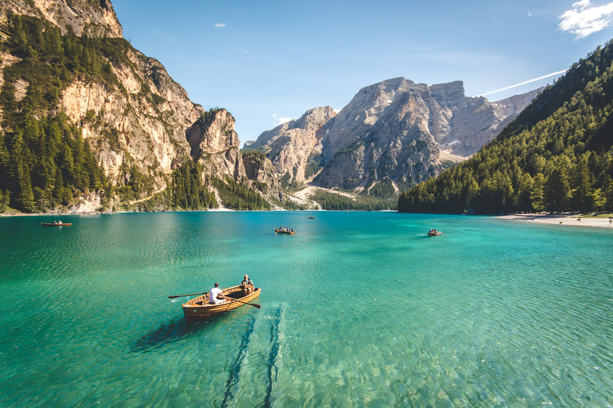
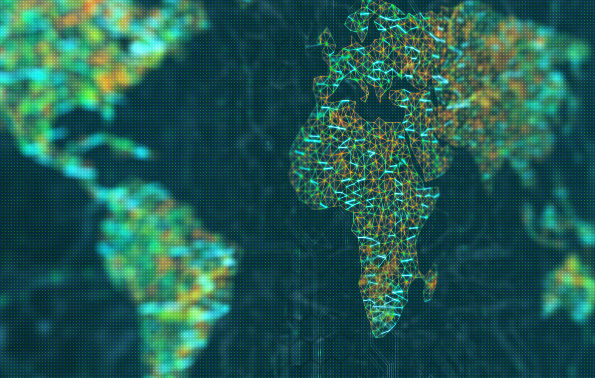

Slot 01 · footage pending
Coast and horizon
Hero companion film. File: assets/video/slot-01.mp4
Personal site · first look
Communications, culture, and the view from above — a life lived between Switzerland and Ghana.
Aerial
These frames are holding space for drone films you will choose next. Drop an MP4 into the matching slot and it will play here automatically.
Hero companion film. File: assets/video/slot-01.mp4
File: assets/video/slot-02.mp4
File: assets/video/slot-03.mp4

File: assets/video/slot-04.mp4

A closer film once you send it. File: assets/video/slot-05.mp4
About
I first set foot in Ghana in 2003. Since then I have lived more than a decade there — studying at the University of Ghana, working in media and politics, managing school redevelopment projects, and moving between rural and urban life.
That time, together with years in Switzerland and among the African diaspora in the UK, is the ground I work from: communications, cultural localisation, and helping people feel their way into a place rather than just pass through it.
This site is personal. The consulting practice lives at polleyconsulting.com. Here is the wider picture — the films, the writing, and the work of connecting people across cultures.
Work
Campaigns, cultural counsel, and the stories that make a place legible to people who are arriving for the first time.
Consultancy
Cultural communications and localisation for investors, diplomats, and teams entering Ghana — on the ground, in the room, and in the language.
Marketing
Head of Marketing and Communications — shaping how a Ghanaian digital infrastructure company is seen by customers, partners, and the industry.
Editorial
Editor-in-chief of a platform that writes and collates stories of innovation from across the continent — and of Swiss–African exchange.
Contact
Switzerland, Ghana, or somewhere in between. Phone, WhatsApp, or email — I will get back to you.